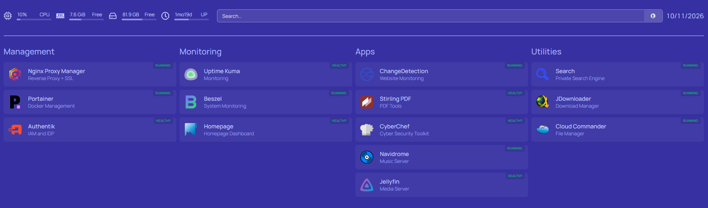

Oracle Cloud Homelab
Oracle Cloud Infrastructure · Ubuntu Linux · Docker · Docker Compose · Nginx Proxy Manager

Built and maintain a self-hosted Linux environment on Oracle Cloud Infrastructure to develop practical skills in server administration, containerisation and network services.
- Deploy and manage applications using Docker and Docker Compose.
- Configure reverse proxy routing and HTTPS for hosted services.
- Manage Linux services, firewall rules and network access.
- Organise self-hosted applications through a central dashboard.
Focus: Linux administration, cloud infrastructure, networking and troubleshooting.